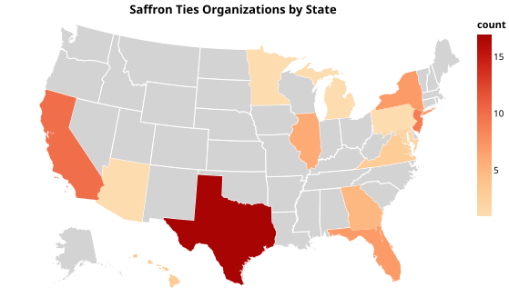

Across the United States, a web of Hindu nationalist organizations has quietly taken root, from Texas to New Jersey, California to Virginia. These groups, many with documented ties to India's Rashtriya Swayamsevak Sangh (RSS), have built a powerful presence in American civic and political life over the past several decades.
A review of 77 organizations reveals that their reach extends into at least 20 states, with the heaviest concentrations in Texas, New Jersey, California and New York. Together they form part of what researchers call the Sangh Parivar, a transnational network of Hindu nationalist groups that operates through charities, cultural organizations, political action committees and lobbying efforts.

The Hindu Swayamsevak Sangh (HSS), the international wing of the RSS, alone operates nearly 220 branches across 32 states. Alongside it, groups like Vishwa Hindu Parishad of America, Sewa International and the Ekal Vidyalaya Foundation have channeled millions of dollars to RSS-affiliated causes, according to researchers at Rutgers University's Center for Security, Race and Rights.
Their strategy in the United States, according to a report submitted to the U.S. Commission on International Religious Freedom, has centered on gaining influence within Indian American communities while lobbying Washington, financing political campaigns and projecting themselves as advocates of religious freedom.